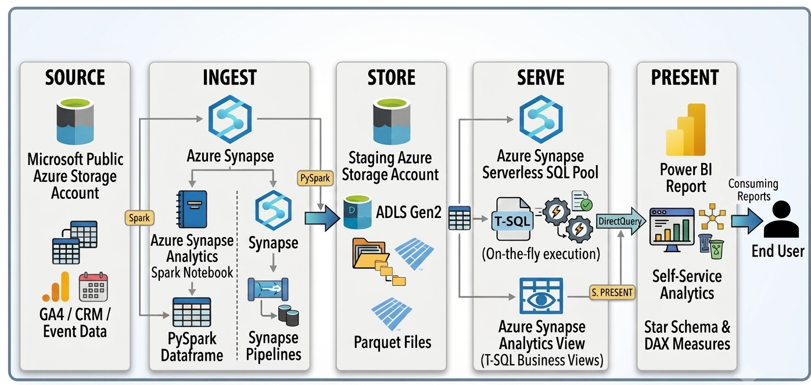

Microsoft Azure Synapse & Power BI Reports
1. Problem & Challenge
Multi-Company Data Consolidation & Stakeholder Reporting
The client approached us with massive volumes of historical and ongoing operational data spanning multiple portfolio companies. The dataset contained complex cross-channel metrics including marketing performance, overall sales, business growth, and ROI.
Each individual company, as well as various specialized internal teams (Sales, Organic Social, Ads Marketing, Email Marketing, Website, and Executive Business teams) required distinct, localized views of performance data. Instead of generating multiple reports across multiple teams and clients along without exposing confidential cross-brand metrics or departmental figures to unauthorized teams was the core challenge.
2. Proposed Solution & Work Done
Automated Power BI Reports with Enterprise Row-Level Security (RLS)
To solve the visibility and scaling challenge, we architected an automated, enterprise-grade Power BI reporting solution integrated with strict Row-Level Security (RLS).
- Role-Based Security Architecture: Embedded DAX-driven Row-Level Security (RLS) rules so that stakeholders, company executives, and departmental heads (e.g., Email Marketing leads vs. Sales leads) automatically see only the data relevant to their specific company and team permissions upon login.
- Unified Data Engine & Virtualization: Handled multi-company historical and real-time data integration through an Azure Synapse Serverless SQL virtualization layer to process large volumes seamlessly.
- Modular 7-Report Dashboard Suite: Engineered a comprehensive suite of 7 specialized report pages tailored to distinct business functions:
- Overview Report: High-level executive summary of multi-company business health, cross-channel ROI, and total revenue.
- Business Report: High-level financial KPIs, margin analysis, and corporate performance tracking.
- Sales Report: Revenue pipelines, conversion rates, product performance, and sales representative metrics.
- Paid Social Report: Ad spend performance, CAC, ROAS, and campaign-level analytics across paid channels.
- Organic Social Report: Reach, engagement metrics, audience growth, and organic content performance.
- Email Marketing Report: Campaign deliverability, open rates, CTRs, and email-driven conversion pipelines.
- Website Analytics Report: Traffic acquisition, user journeys, session durations, and landing page conversions.
3. Pipeline Architecture

3. End-to-End Pipeline Workflow (8-Step Architecture)
A sequential breakdown of how data flows from raw source ingestion to serverless SQL virtualization and RLS-secured dashboard distribution:
Stream raw JSON, CSV, and tracking logs from GA4, CRM, and cloud storage into Azure Synapse.
Transform batch datasets using PySpark DataFrames within Azure Synapse Analytics Spark Notebooks and orchestrate runs via Synapse Data Pipelines.
Land partitioned, high-compression Parquet files into structured folders within Azure Data Lake Storage Gen2.
Define an EXTERNAL DATA SOURCE (pointing to ADLS Gen2) and an EXTERNAL FILE FORMAT (Parquet) inside Azure Synapse Serverless SQL.
Run serverless T-SQL queries directly against raw Data Lake files using OPENROWSET without persistent data loading.
Build abstraction SQL views (CREATE VIEW) with ISNULL() and explicit casting to handle variable column counts across file partitions.
Present unified T-SQL views as an analytical virtualization layer, shielding downstream reports from schema changes.
Connect Power BI to Synapse views, construct a Star Schema with DAX metrics, enforce Row-Level Security (RLS), and publish reports to the Power BI Service.
4. T-SQL Dumps & View Definitions (View-Only Mode)
The following view-only T-SQL dumps highlight the serverless virtualization views, Data Lake ingestion scripts, and analytical metric calculations implemented inside Azure Synapse SQL:
VIEW-ONLY DUMP — DATA LAKE & FUNNEL VIEWS-- Query: Create View over Single Parquet File
CREATE OR ALTER VIEW [dbo].[view_FunnelRaw] AS
SELECT
Date,
Traffic_source,
Campaign,
Media_type,
Paid__Organic,
Currency,
Cost,
Clicks,
Impressions
FROM OPENROWSET(
BULK 'https://nestitdatalake01.blob.core.windows.net/datalake/raw/funnel/2025-07-01/funnel_data_2025_07.parquet',
FORMAT = 'PARQUET'
) AS result;
-- Query: View Display Execution
SELECT *
FROM [dbo].[view_FunnelRaw_03]
ORDER BY [Date] ASC;
-- Query: Create View over Multiple Data Lake Folders
CREATE OR ALTER VIEW dbo.view_FunnelRaw
AS
SELECT
[Date],
Traffic_source,
Campaign,
Media_type,
Paid__Organic,
Currency,
Cost,
Clicks,
Impressions
FROM OPENROWSET(
BULK 'https://nestitdatalake01.blob.core.windows.net/datalake/raw/funnel/*/*.parquet',
FORMAT = 'PARQUET'
) AS r;
-- Query: Filtered View for Paid Organic Traffic
CREATE OR ALTER VIEW dbo.view_FunnelRaw_Paid
AS
SELECT
[Date],
Traffic_source,
Campaign,
Media_type,
Paid__Organic AS Paid_Organic,
Currency,
Cost,
Clicks,
Impressions
FROM OPENROWSET(
BULK 'https://nestitdatalake01.blob.core.windows.net/datalake/raw/funnel/*/*.parquet',
FORMAT = 'PARQUET'
) AS r
WHERE
UPPER(LTRIM(RTRIM(Paid__Organic))) = 'PAID';
-- Query: External Data Source Allocation
CREATE EXTERNAL DATA SOURCE external_datalake
WITH (
LOCATION = 'https://nestitdatalake01.dfs.core.windows.net/datalake/raw/',
CREDENTIAL = msi_cred
);
VIEW-ONLY DUMP — CRM & METRICS ANALYTICS
-- Query: Won Digital Leads & Closed Opportunities
SELECT
o.Opportunity_BK,
o.Stage,
o.Status,
o.Custom_Page_Url,
ol.Opportunity_SK
FROM dbo.OpportunityView o
INNER JOIN dbo.OrderLineView ol
ON o.Opportunity_BK = ol.Opportunity_SK
WHERE
o.Custom_Page_Url IS NOT NULL
AND utm_content = 'ad11_leads_docuware_sat-skrivare_image_people'
AND (
o.Status LIKE '%Vunnen%'
OR o.Stage LIKE '%Vunnen%'
);
-- Query: Customer Acquisition Cost (CAC)
SELECT
f.Total_Marketing_Spend,
c.New_Customers,
f.Total_Marketing_Spend * 1.0 / NULLIF(c.New_Customers, 0) AS CAC
FROM
(SELECT SUM(cost) AS Total_Marketing_Spend
FROM dbo.view_FunnelRaw_Paid01
WHERE date BETWEEN '2026-01-01' AND '2027-01-01'
AND Nestit_Company = 'Docuware') f,
(SELECT COUNT(*) AS New_Customers
FROM dbo.OpportunityView o
INNER JOIN dbo.OrderLineView ol ON o.Opportunity_BK = ol.Opportunity_SK
WHERE o.Custom_Page_Url IS NOT NULL
AND (o.Status LIKE '%Vunnen%' OR o.Stage LIKE '%Vunnen%')
AND o.Source_Updated_Timestamp BETWEEN '2026-01-01' AND '2027-01-01') c;
-- Query: Marketing ROI Calculation
SELECT
f.Total_Marketing_Spend,
r.Revenue_From_Marketing,
r.Revenue_From_Marketing - f.Total_Marketing_Spend AS Marketing_Profit,
ROUND(
(r.Revenue_From_Marketing - f.Total_Marketing_Spend) * 1.0
/ NULLIF(f.Total_Marketing_Spend, 0),
2
) AS Marketing_ROI
FROM
(SELECT SUM(cost) AS Total_Marketing_Spend
FROM dbo.view_FunnelRaw_Paid01
WHERE date BETWEEN '2026-01-01' AND '2027-01-01'
AND Nestit_Company = 'Docuware') f,
(SELECT SUM(ol.line_amount) AS Revenue_From_Marketing
FROM dbo.OpportunityView o
INNER JOIN dbo.OrderLineView ol ON o.Opportunity_BK = ol.Opportunity_SK
WHERE o.Custom_Page_Url IS NOT NULL
AND (o.Status LIKE '%Vunnen%' OR o.Stage LIKE '%Vunnen%')
AND o.Source_Updated_Timestamp BETWEEN '2026-01-01' AND '2027-01-01') r;
-- Query: Return on Ad Spend (ROAS)
SELECT
f.Total_Marketing_Spend,
r.Revenue_From_Marketing,
ROUND(
r.Revenue_From_Marketing * 1.0 / NULLIF(f.Total_Marketing_Spend, 0),
2
) AS ROAS
FROM
(SELECT SUM(cost) AS Total_Marketing_Spend
FROM dbo.view_FunnelRaw_Paid01
WHERE date BETWEEN '2026-01-01' AND '2027-01-01'
AND Nestit_Company = 'Docuware') f,
(SELECT SUM(ol.line_amount) AS Revenue_From_Marketing
FROM dbo.OpportunityView o
INNER JOIN dbo.OrderLineView ol ON o.Opportunity_BK = ol.Opportunity_SK
WHERE o.Custom_Page_Url IS NOT NULL
AND (o.Status LIKE '%Vunnen%' OR o.Stage LIKE '%Vunnen%')
AND o.Source_Updated_Timestamp BETWEEN '2026-01-01' AND '2027-01-01') r;
-- Query: Cost per Sales Accepted Lead (SAL)
SELECT
f.Total_Marketing_Spend,
s.SAL_Count,
ROUND(
f.Total_Marketing_Spend * 1.0 / NULLIF(s.SAL_Count, 0),
2
) AS Cost_Per_SAL
FROM
(
SELECT SUM(Cost) AS Total_Marketing_Spend
FROM dbo.view_FunnelRaw_Paid01
WHERE [Date] >= '2026-01-01' AND [Date] < '2027-01-01'
AND Nestit_Company = 'Docuware'
) f
CROSS JOIN
(
SELECT COUNT(DISTINCT o.Opportunity_BK) AS SAL_Count
FROM dbo.OpportunityView o
LEFT JOIN dbo.CompanyViewClone c ON o.Company_SK = c.Company_BK
WHERE o.Company_SK IS NOT NULL
AND o.Company_SK <> '0'
AND c.Custom_SAL = 1
AND o.Source_Updated_Timestamp >= '2026-01-01'
AND o.Source_Updated_Timestamp < '2027-01-01'
) s;
5. Power BI Dashboard Showcase
Below are screenshots of the interactive Power BI reporting suite built over the Synapse SQL abstraction views.
6. Repository Assets
Explore the full source code, `.sql` dumps, and `.pbix` report files on GitHub:
View Full Repository on GitHub ↗